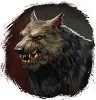

⚔
Broken Ranks
Fandom Wiki
Интерактивная вики
·
Все страницы
Шкура серого волка
Предметы
/ С врагов
Открыть в интерактивной вики →
Вес
10
Цена
120
Описание
Требуется для создания
Амарантовый элемент
.
-
Дроп

Волк
Применение
Ингредиент для изготовления
Амарантового элемента
,
Для завершения
поручения
Поручение с предсказанием
,
10 × Шкура серого волка можно продать за 1 500 золота у Волчьего в Лесу Колдов.
Как добыть
Получаем за победу над:
Волк
Ингредиент для
Фрахлумп
Упоминается в
Волчья пещера
,
Сырьё и ингредиенты